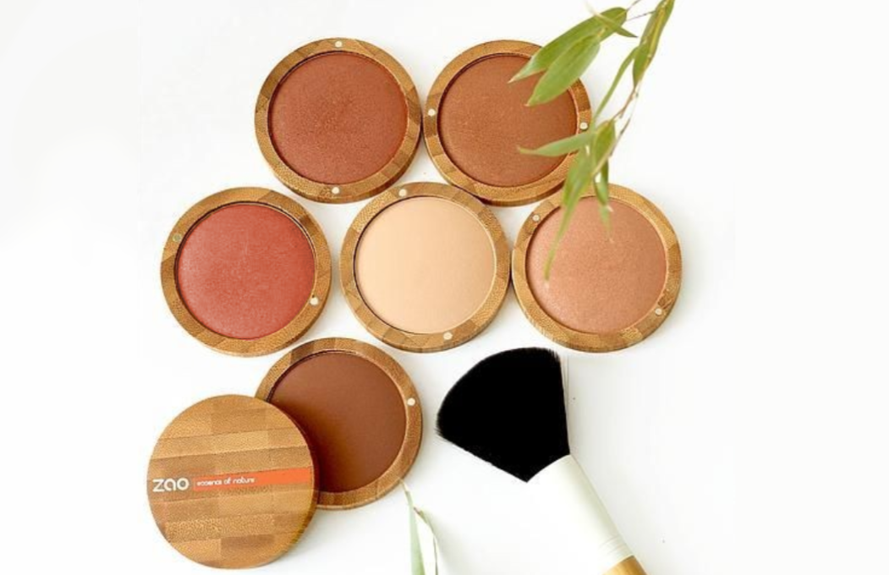

Alternativas ecológicas a las esponjas

Las esponjas son productos que nos sirven para poder distribuir
jabón sobre nuestro cuerpo de manera apropiada sin desperdiciar
producto aprovechando la espuma que generan. ¿Dónde radica el
problema de este producto? La respuesta está en los materiales de
los que están hechas las esponjas convencionales. Conviene que sepas
que la mayoría de esponjas que compramos en el supermercado están
fabricadas de espuma de poliuretano o goma espuma, que es un
material compuesto de polímeros plásticos. En otras palabras, es un
derivado del petróleo que ocasiona un elemento plástico. Por lo
tanto, las esponjas son un producto más que causa un gran daño
medioambiental. Además, son productos de corta vida que cambiamos
cada dos o tres meses, esto hace que al año se desechen una gran
cantidad de esponjas que acaban en nuestros mares y océanos
perjudicando gravemente a la flora y la fauna.
Recuerda que cada año se desechan en los mares y océanos hasta 12
millones de toneladas de residuos plásticos. Estos residuos
plásticos tardan más hasta 600 años en degradarse (Fuente La
Vanguardia) y con el paso del tiempo se van fragmentando en pequeñas
partículas llamadas microplásticos. Miles de especies marinas y aves
ingieren estas partículas que acaban causándoles la muerte. Además,
si comemos pescado que haya ingerido microplásticos, afectará en
consecuencia nuestra cadena alimenticia pudiendo ocasionar grandes
daños en la salud. Por todos estos motivos, vemos estrictamente
necesaria la necesidad de reducir los productos hechos con plástico
en nuestro día a día. En especial tenemos que deshacernos de
aquellos que tienen una corta vida, como es el caso de las esponjas.
Así pues, hoy te hemos elaborado una lista de alternativas
ecológicas para sustituir tus esponjas. Te hemos facilitado
alternativas zero waste teniendo en cuenta la función para la que se
utilizan. Esperemos que prestes atención y decidas sustituir de una
vez tus esponjas de plástico.
Alternativas ecológicas para sustituir las esponjas
Esponjas ecológicas faciales
Si eres de los que te gusta incluir una esponja en tu rutina facial,
te recomendamos estas alternativas:
Esponja Natural Konjac
Las esponjas Konjac son 100% naturales y biodegradables ya que están
hechas de la raíz de una planta asiática. Además de ser una opción
ecológica, vegana y 0 residuos, es respetuosa con tu piel. Esta
esponja exfolia y masajea suavemente la piel sin dañar su capa
protectora y aporta una hidratación a tu rostro de manera
natural.
Discos vegetales de Luffa
Otra versión de esponjas faciales en forma de discos son las de
Luffa. A diferencia de los discos anteriores, éstos tienen una
textura más áspera y se utilizan en momentos puntuales para la
exfoliación. Su material es la Luffa, una planta tropical originaria
del sureste asiático. Por lo tanto, se trata de un material vegano,
natural y ecológico. Este tipo de discos son perfectos para eliminar
los puntos negros y reducir el exceso de grase, entre muchas otras
propiedades.
Esponjas ecológicas corporales
Las alternativas de esponjas ecológicas que te recomendamos para tu
cuerpo durante durante la ducha son las siguientes:
Esponja Natural Konjac
Al igual que para la cara, para el cuerpo existen esponjas de Konjac
que funcionan a la perfección aportando las mismas cualidades. Sin
embargo, las esponjas de Konjac para ducha son de un tamaño más
grande, lo que te permite un uso más rápido y adecuado para el
cuerpo.
Esponja Luffa
De nuevo como con los discos, las esponjas Luffa para la ducha están
hechas del mismo material. Como sucedes con la anterior, su tamaño
para la ducha es más grande y grueso para este tipo de función.
Recuerda que la textura de estas esponjas son más ásperas, por lo
que solo lo recomendamos para la exfoliación de manera
esporádica.
Esponja natural marina
Una de las opciones naturales más respetuosas con la piel es la
esponja de mar natural. Sirve para pieles tan delicadas como las de
los bebés y ancianos. Por lo tanto, la puedes usar a diario sin
ningún problema ya que también aporta beneficios para la piel.
Esponja de tela
Otra alternativa ecológica son las esponjas de tela. Como su propio
nombre indica, las esponjas de tela están hechas a partir de algún
material textil como puede ser el algodón. Sin duda, son una
excelente alternativa ya que son mucho más sostenibles y respetuosas
con el medio ambiente que una esponja clásica.
También le podría interesar:
Maquillaje ecofriendly que debes conocer
¿Cómo ser una empresa ecoamigable?

Beneficios de las toallas higiénicas de tela